vignettes/cs1_hong_kong.Rmd
cs1_hong_kong.RmdThis vignette is intended as a reference for using
serosolver to reconstruct antibody kinetics and infection
histories from longitudinal, single antigen data. It uses data from a
cohort study in Hong Kong during and after the 2009
A/H1N1pdm09 outbreak. With repeat serological samples tested against
a given virus, serosolver can reconstruct the unobserved
infection dynamics from measured titres collected several months apart.
It is also possible to examine these infection dynamics stratified by
available demographic variables, such as vaccination status and age.
This case study aims to reconstruct the unobserved infection dynamics from measured antibody titres collected over time, examine infection rates stratified by vaccination status and age group, and estimate biological parameters describing the short-term antibody response.
The first part of the vignette sets up and explains the input parameters and data, with exploratory plots showing how the model relates to the observations.
The second part applies the model to real data from a longitudinal serosurvey in Hong Kong and presents the model outputs and MCMC convergence diagnostics.
The third part repeats the analysis using synthetic data to assess whether the inference machinery recovers known infection histories and model parameters.
The analysis uses quarterly infection states between 2009 and 2012. The data contain titres against a single biomarker, so no antigenic map is required for fitting this example.
## Install serosolver from GitHub
## remotes::install_github("seroanalytics/serosolver")
library(serosolver)
library(ggplot2)
library(dplyr)
library(doParallel)
library(coda)The data used in this analysis are haemagglutination inhibition (HI) titres against A/H1N1pdm09 – an antigenically novel lineage of influenza descended from the 1918 influenza pandemic strain, which began circulating in 2009 and replaced the existing lineage of seasonal A/H1N1 viruses.
In this dataset, serum samples were taken between 2009 and 2012
(A/H1N1pdm09 only started circulating in March 2009) and therefore all
time variables are constrained to this time period. We are interested in
inferring infections and attack rates at a 3-month resolution.
serosolver works in discrete time, and thus we convert
calendar time into discrete time intervals.
The data are already in the format expected by
serosolver, including individual IDs, sample times,
biomarker IDs, measurements, repeats, and birth times. The age and
vaccination variables are used below to define demographic and
population groups.
hk_data_path <- system.file(
"extdata", "case_study_1", "HKdata_h1n1.csv", package = "serosolver"
)
antibody_data <- read.csv(hk_data_path)
## Create a factor version of the vaccination status and age group, indexed starting from 0 (used later)
antibody_data <- antibody_data %>%
mutate(
vaccinated1 = as.integer(factor(vaccinated, levels = c("No", "Yes"))) - 1,
age1 = as.integer(factor(age_group, levels = c("<19", "19-64", ">64"))) - 1,
population_group = vaccinated1 + 1
)
demographics <- antibody_data %>%
select(individual, birth, vaccinated1, age1, population_group) %>%
distinct()
factor_key <- antibody_data %>%
select(vaccinated, vaccinated1, age_group, age1) %>%
distinct()
## Define the vector of times over which individuals might be infected. We work with quarters here, so we multiply the years by 4 to get the quarter number.
possible_exposure_times <- seq(2009 * 4 + 1, 2012 * 4, by = 1)
## Create x-axis labels to allow conversion between the integers used in the model and the actual calendar time.
x_breaks <- possible_exposure_times[seq(1, length(possible_exposure_times), by = 2)]
x_labels <- c(
"Q1-2009", "Q3-2009", "Q1-2010", "Q3-2010", "Q1-2011", "Q3-2011"
)
x_axis <- scale_x_continuous(breaks = x_breaks, labels = x_labels)
## Validate the data and demographic information.
antibody_data <- check_data(antibody_data)
demographics <- check_demographics(demographics)The data are visualised and summarised before model fitting to show
their structure and the groups represented in the analysis. The
serosolver data plot shows the observations in the format
used by the model, providing a check that the data are correctly
structured for fitting. The data contain 420 individuals and seven
sample times. The model uses the same quarterly time scale for
sample_time, birth, and
possible_exposure_times.
Simple criteria could also be used to assign infections between sampling rounds and compare inferred seroconversion rates between age groups and over time. The model-based analysis below uses all of the antibody measurements rather than relying on a fixed seroconversion threshold.
## Summarise the observed measurements and the groups represented in the data.
range(antibody_data$measurement)
#> [1] 0 11
table(antibody_data$sample_time)
#>
#> 8039 8040 8041 8044 8045 8047 8048
#> 420 318 102 94 326 300 120
table(antibody_data$age_group, antibody_data$vaccinated)
#>
#> No Yes
#> <19 120 40
#> >64 64 160
#> 19-64 1044 252
## Individual-level plots
plot_antibody_data(
antibody_data,
possible_exposure_times = possible_exposure_times,
n_indivs = 16,
study_design = "longitudinal"
) +
facet_wrap(~ individual, ncol = 4) +
x_axis
#> Scale for x is already present.
#> Adding another scale for x, which will replace the existing scale.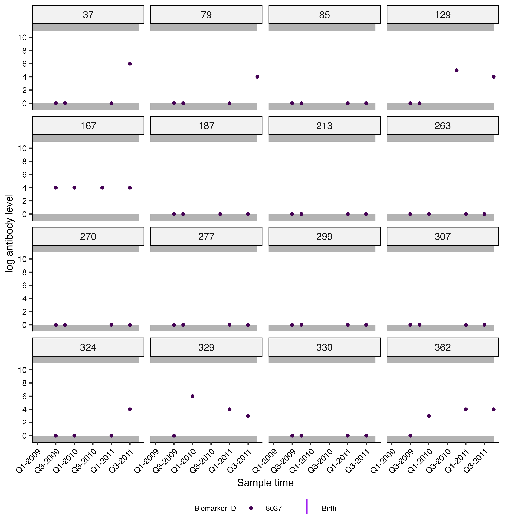
The assumptions of the fitted model are controlled through the
parameter table. serosolver allows particular parameters to
be estimated or fixed, and we recommend iterative comparison of model
structures when identifiability or convergence is a concern. This case
study uses the default linear waning form; exponential waning is
selected through a fixed exponential_waning row in
par_tab, as described in the advanced features vignette.
## Prepare the model settings.
## Read in the par_tab object - this is used to control the model parameters.
data(example_par_tab)
par_tab <- example_par_tab
## Fix cross-reactivity parameters, as we are only investigating a single antigen.
par_tab[par_tab$names %in% c("cr_long", "cr_short"), "fixed"] <- 1
par_tab[par_tab$names %in% c("cr_long", "cr_short"), "values"] <- 0
## Turn off long-term waning.
par_tab[par_tab$names == "wane_long", "fixed"] <- 1
par_tab[par_tab$names == "wane_long", "values"] <- 0
## Set the minimum measurement to be 0, as the data are log-transformed and the lowest observed titre is 1 (log(1) = 0).
## Also set the maximum measurement to the highest recorded level in the data.
par_tab[par_tab$names == "min_measurement", c("values", "lower_bound", "upper_bound")] <- 0
par_tab[par_tab$names == "max_measurement", c("values", "lower_bound", "upper_bound")] <- max(antibody_data$measurement)
## Set the delay from infection to peak antibody response to be one time period (3 months).
par_tab[par_tab$names == "boost_delay", "values"] <- 1
## Estimate different antibody kinetics parameters by vaccination status.
## These are estimated as coefficients added to a base parameter (reference group 0).
par_tab$stratification <- NA_character_
par_tab[par_tab$names == "boost_short", "stratification"] <- "vaccinated1"
## Check the parameter table before fitting.
check_par_tab(par_tab, mcmc = TRUE, possible_exposure_times = possible_exposure_times, version=2)
#> names values fixed lower_bound upper_bound
#> 1 boost_long 2.00 0 0 8
#> 2 boost_short 2.00 0 0 8
#> 3 boost_delay 1.00 1 0 10
#> 4 antigenic_seniority 0.00 1 0 1
#> 5 wane_long 0.00 1 0 1
#> 6 wane_short 0.25 0 0 1
#> 7 wane_maternal 0.00 1 0 8
#> 8 cr_long 0.00 1 0 1
#> 9 cr_short 0.00 1 0 1
#> 10 min_measurement 0.00 1 0 0
#> 11 max_measurement 11.00 1 11 11
#> 12 obs_sd 1.00 0 0 25
#> 13 fp_rate 0.00 1 0 1
#> 14 infection_model_prior_shape1 1.00 1 0 1000
#> 15 infection_model_prior_shape2 10.00 1 0 1000
#> 16 antibody_dependent_boosting 0.00 1 0 1
#> 17 exponential_waning 0.00 1 0 1
#> lower_start upper_start par_type stratification biomarker_group steps
#> 1 1.000 3e+00 1 <NA> 1 0.1
#> 2 2.000 3e+00 1 vaccinated1 1 0.1
#> 3 0.000 1e+01 1 <NA> 1 0.1
#> 4 0.010 1e-01 1 <NA> 1 0.1
#> 5 0.001 2e-02 1 <NA> 1 0.1
#> 6 0.010 1e-01 1 <NA> 1 0.1
#> 7 0.100 5e-01 1 <NA> 1 0.1
#> 8 0.100 2e-01 1 <NA> 1 0.1
#> 9 0.010 1e-01 1 <NA> 1 0.1
#> 10 0.000 0e+00 1 <NA> 1 0.1
#> 11 8.000 8e+00 1 <NA> 1 0.1
#> 12 0.500 2e+00 1 <NA> 1 0.1
#> 13 0.000 1e+00 1 <NA> 1 0.1
#> 14 0.000 1e+03 2 <NA> 1 0.1
#> 15 0.000 1e+03 2 <NA> 1 0.1
#> 16 0.000 1e+00 1 <NA> 1 0.1
#> 17 0.000 1e+00 0 <NA> NA 0.1The parameter table controls which parameters are estimated, their
starting values, and their allowable ranges. The
stratification entry above allows the short-term boost to
differ between vaccinated and unvaccinated individuals. Population
groups are supplied separately through population_group and
are used when summarising infection histories and attack rates.
The assumed antibody kinetics can be inspected before fitting the model:
plot_antibody_model(
pars = par_tab,
infection_history = possible_exposure_times[1],
times = possible_exposure_times
)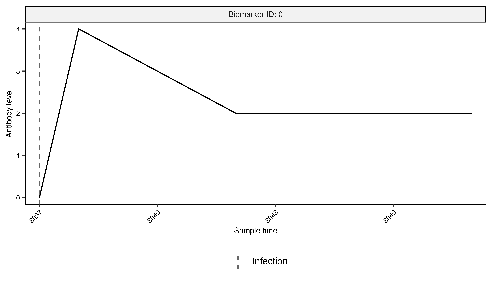
serosolver is a Bayesian model, so prior distributions
must be specified for all model parameters. Prior predictive plots,
produced by running the model without evaluating the likelihood, show
whether the priors generate plausible antibody responses and infection
rates, or whether they are too strong or weak.
For this case study, the prior function places a standard normal prior on stratification coefficients, log-normal priors on the boost parameters, and a Beta prior on the short-term waning parameter.
## Prior distributions for attack rates and antibody boosts.
hist(rbeta(1000, 1, 10), breaks = 50, main = "Prior attack rate", xlab = "Attack rate")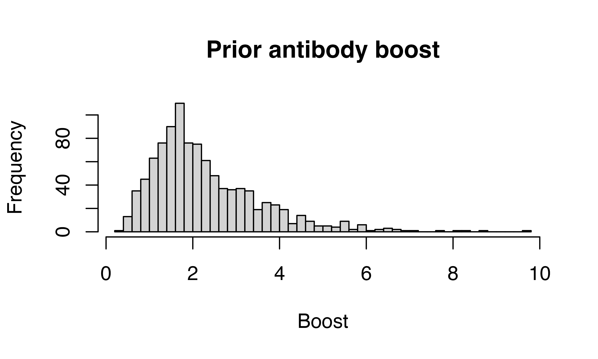
## Function used by serosolver to set priors for the model parameters.
prior_func <- function(par_tab) {
## Finds any stratification coefficient parameters.
coef_pars <- which(grepl("coef", par_tab$names))
par_names <- par_tab$names
function(pars) {
## This places a standard normal prior on each model coefficient.
names(pars) <- par_names
prior_p <- sum(dnorm(pars[coef_pars], 0, 1, log = TRUE))
## These priors can be changed to reflect prior knowledge about the antibody response.
prior_p <- prior_p + dlnorm(pars["boost_long"], log(2), 0.5, log = TRUE)
prior_p <- prior_p + dlnorm(pars["boost_short"], log(2), 0.5, log = TRUE)
prior_p <- prior_p + dbeta(pars["wane_short"], 4, 8, log = TRUE)
prior_p
}
}The infection-history prior can be set to a modal value consistent
with seasonal influenza, such as an annual attack rate of around 15%,
while retaining a fairly large variance. serosolver
provides functions for constructing these Beta priors.
## Set the prior mode for the infection-history model.
ar_priors <- find_beta_prior_mode(0.15, 4)
par_tab[par_tab$names == "infection_model_prior_shape1", "values"] <- ar_priors$shape1
par_tab[par_tab$names == "infection_model_prior_shape2", "values"] <- ar_priors$shape2The infection-history prior uses the Beta shape parameters in
par_tab. These can be changed to represent a different
prior attack rate before fitting.
The prior predictive model is run without evaluating the likelihood. Its returned parameter and antibody-model plots show the implications of the prior assumptions before fitting to the observed data.
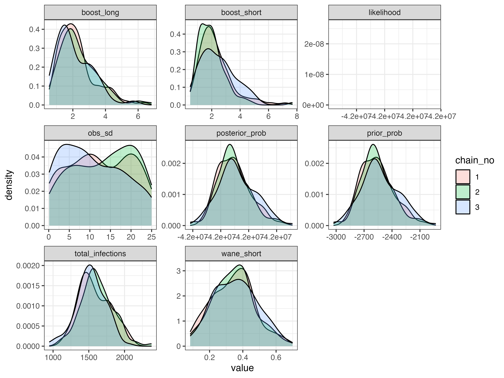
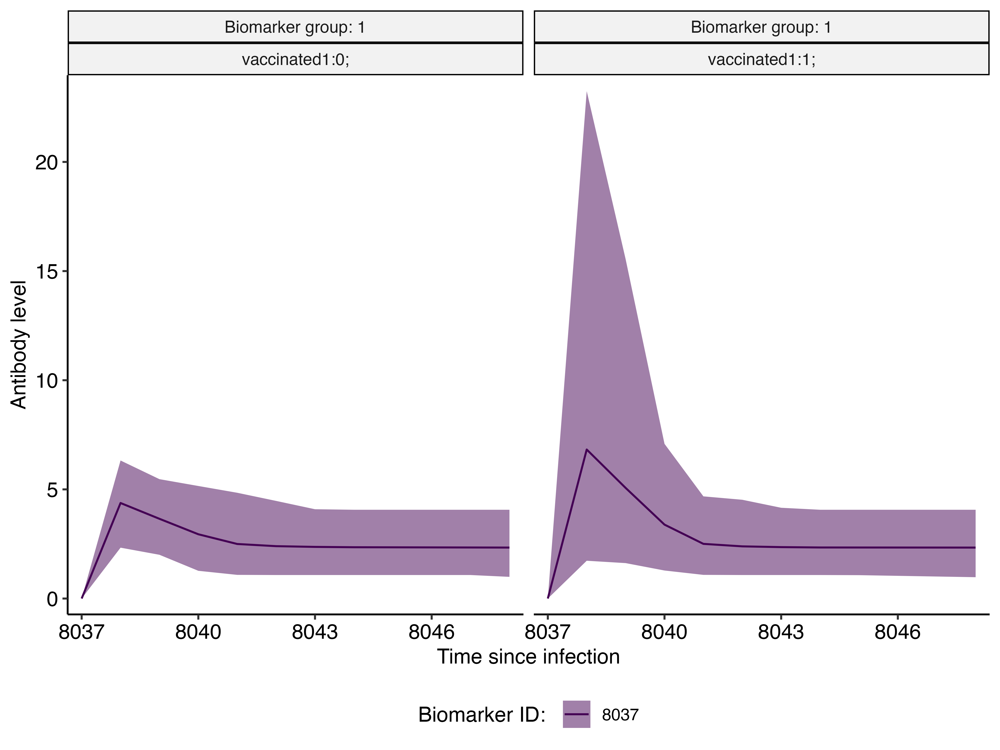
serosolver allows model parameters to be stratified by
covariates. Antibody boosting, for example, can vary by age group,
vaccination status, or another demographic variable. The
par_tab$stratification variable specifies the covariate,
while NA indicates that the same parameter applies to all
individuals.
The chosen variable must be a factor e.g., vaccinated = 0 or 1, age
group = 0, 1, or 2. serosolver will estimate a coefficient
for each stratification level beyond the baseline, with a link function
depending on the bounds of the parameter. For example, for an unbounded
parameter (-Inf to Inf), the transformation is
,
where
is the parameter value in the baseline group and
is an additive coefficient given stratification level
.
For positively bounded parameters, the transformation is
,
and for parameters with an upper and lower bound the transformation is
.
We can then interpret any stratification-varying effect by investigating
the
coefficients.
## Parameter stratification by vaccination status.
## Estimate different antibody kinetics parameters by vaccination status.
par_tab[par_tab$names == "boost_short", "stratification"] <- "vaccinated1"
## Model individuals as being under a different infection process depending on vaccination status.
par_tab[par_tab$names %in% c("infection_model_prior_shape1", "infection_model_prior_shape2"), "stratification"] <- "vaccinated1"serosolver
The model is fitted using the main serosolver function,
which takes the par_tab object, antibody data, demographic
information, and possible exposure times, among other arguments. The
MCMC settings are controlled by mcmc_pars; the number of
chains and parallel execution can also be specified.
MCMC chains are saved to the location specified by
filename, along with a progress log and a settings file. If
running in parallel, the progress text file gives updates and an
estimated run time.
mcmc_pars <- c(
adaptive_iterations = 50000,
iterations = 100000,
thin = 100,
thin_inf_hist = 1000,
save_block = 1000
)
res <- serosolver(
par_tab = par_tab,
antibody_data = antibody_data,
demographics = demographics,
possible_exposure_times = possible_exposure_times,
filename = file.path(mcmc_dir, "hong_kong"),
prior_func = prior_func,
data_type = "discrete",
n_chains = 3,
parallel = TRUE,
mcmc_pars = mcmc_pars,
verbose = TRUE
)After fitting, read the saved chains back into R. The
burnin value should match the adaptive period that was
excluded from the analysis.
chains <- load_mcmc_chains(
location = mcmc_dir,
par_tab = par_tab,
burnin = mcmc_pars["adaptive_iterations"],
convert_mcmc = FALSE
)
serosolver_settings <- res$settingsIt is important with any model to check diagnostics for how well the
algorithm has run. With MCMC, this amounts to checking whether the
chains have converged to the same posterior distribution, and whether we
have taken a sufficient number of proposed draws to give a high
effective sample size (ESS). ESS is the sample size adjusted for
autocorrelation between draws. In serosolver, these
diagnostics can be found in the res$all_diagnostics
object.
Ideally, effective sample sizes would be greater than 200, and
would be less than 1.1 (values close to 1 indicate that the different
chains have converged to the same posterior distribution). Current best
practice is more stringent than this, and models written with Stan will
often give ESS values in the thousands and
< 1.01. The less efficient serosolver sampler motivates
somewhat more relaxed criteria here. Low ESS or high
indicate that more iterations or a different model structure may be
needed.
## MCMC convergence diagnostics -- most important!
## We would probably want to run this for many more iterations in a final version.
print(res$all_diagnostics$p_thetas[[1]])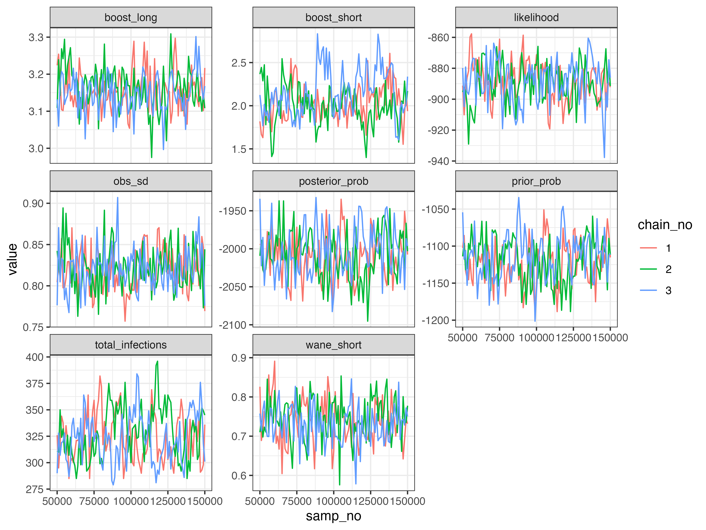
print(res$all_diagnostics$p_thetas[[2]])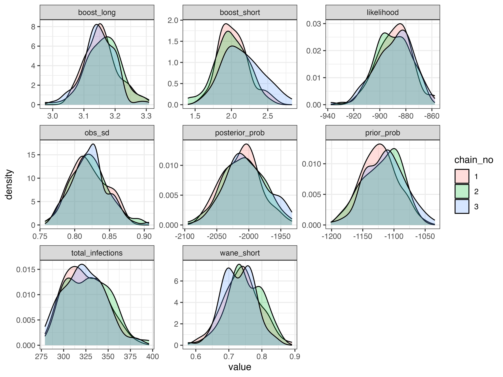
knitr::kable(res$all_diagnostics$theta_estimates)| names | median | mean | lower95_CrI | upper95_CrI | ess | Rhat point estimate | Rhat upper CI |
|---|---|---|---|---|---|---|---|
| boost_long | 3.154 | 3.156 | 3.053 | 3.27 | 162.7 | 1.009 | 1.05 |
| boost_short | 2.031 | 2.061 | 1.619 | 2.60 | 64.6 | 1.246 | 1.71 |
| wane_short | 0.737 | 0.739 | 0.637 | 0.84 | 185.7 | 1.055 | 1.19 |
| obs_sd | 0.819 | 0.821 | 0.775 | 0.87 | 196.9 | 0.994 | 1.00 |
| total_infections | 324.000 | 324.865 | 285.550 | 373.35 | 82.8 | 1.052 | 1.19 |
knitr::kable(res$all_diagnostics$inf_hist_estimates$by_year)| j | population_group | mean | median | lower_quantile | upper_quantile | effective_size | gelman_point | gelman_upper |
|---|---|---|---|---|---|---|---|---|
| 1 | 1 | 31.25 | 31 | 27.00 | 35.0 | 172.8 | 1.01 | 1.05 |
| 2 | 1 | 11.54 | 11 | 8.00 | 16.0 | 184.9 | 1.07 | 1.23 |
| 3 | 1 | 26.80 | 27 | 24.00 | 30.0 | 303.0 | 1.00 | 1.03 |
| 4 | 1 | 36.92 | 37 | 26.00 | 49.5 | 202.3 | 1.00 | 1.02 |
| 5 | 1 | 20.60 | 20 | 4.00 | 41.9 | 155.5 | 1.04 | 1.12 |
| 6 | 1 | 23.91 | 23 | 7.00 | 45.9 | 241.4 | 1.12 | 1.37 |
| 7 | 1 | 38.25 | 38 | 21.00 | 56.0 | 215.2 | 1.10 | 1.34 |
| 8 | 1 | 6.85 | 7 | 1.00 | 15.0 | 161.4 | 1.09 | 1.29 |
| 9 | 1 | 20.20 | 20 | 9.55 | 34.0 | 176.6 | 1.12 | 1.38 |
| 10 | 1 | 35.12 | 35 | 24.00 | 45.0 | 162.1 | 1.12 | 1.39 |
| 11 | 1 | 32.24 | 32 | 13.55 | 56.0 | 129.0 | 1.06 | 1.16 |
| 12 | 1 | 41.17 | 39 | 8.10 | 85.0 | 95.6 | 1.07 | 1.23 |
In addition to checking that the MCMC algorithm has behaved, we want
to check whether the model can describe the data. The returned
res object contains standard plots for the predicted
antibody levels, attack rates, and antibody kinetics model:
res$antibody_predictions$p_pointrange ## Compare predicted antibody titres to the observed data.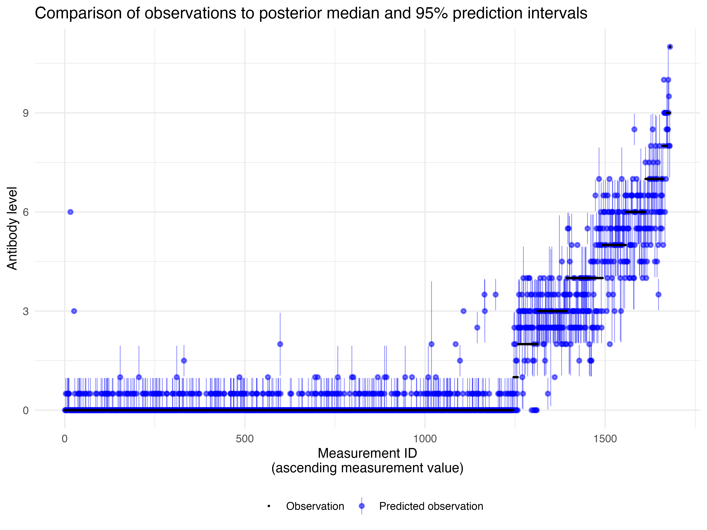
res$antibody_predictions$p_hist_draws ## Compare predicted antibody titres from different posterior draws.
#> `stat_bin()` using `bins = 30`. Pick better value `binwidth`.
#> `stat_bin()` using `bins = 30`. Pick better value `binwidth`.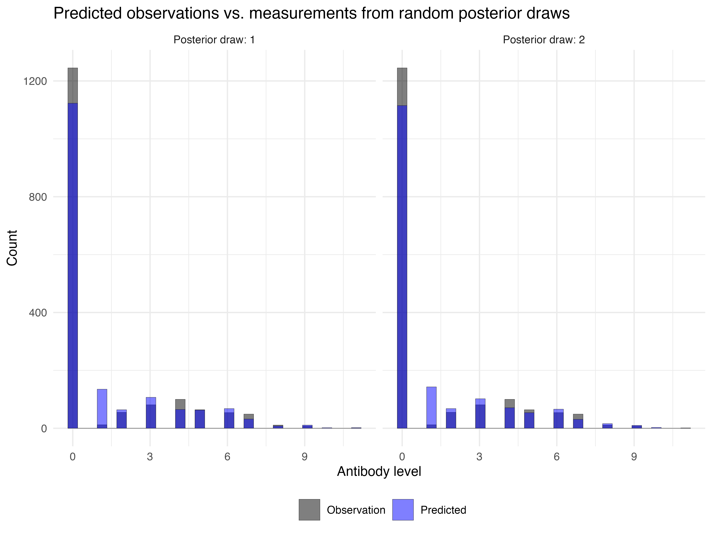
res$antibody_predictions$proportion_correct ## Check whether predicted observations cover the actual observations.
#> [1] "Proportion of observations within 95% prediction intervals: 0.64167"
res$plot_fits_longitudinal[[1]] ## Compare individual-level predictions to the observed data.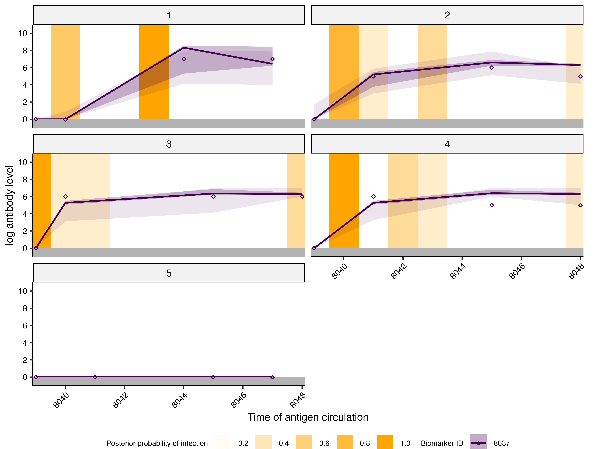
The same plots can be regenerated manually from the saved chains. This is useful when changing the individuals, number of posterior draws, or other plotting options without rerunning the model.
## Read in all MCMC draws to plot additional model fits.
plot_model_fits(
chain = chains$theta_chain,
infection_histories = chains$inf_chain,
individuals = 1:25,
orientation = "longitudinal",
settings = serosolver_settings,
p_ncol = 5
)[[1]] + x_axis
#> Scale for x is already present.
#> Adding another scale for x, which will replace the existing scale.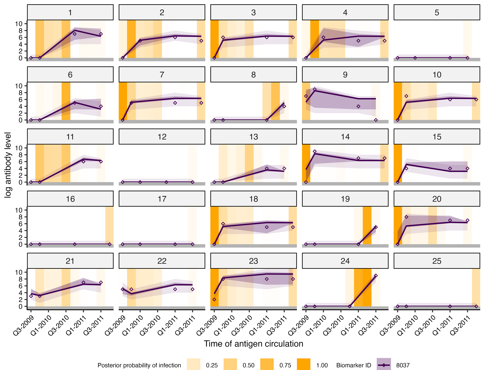
## Compare attack-rate estimates between population groups.
plot_attack_rates(
infection_histories = chains$inf_chain,
settings = serosolver_settings
) + x_axis
#> Scale for x is already present.
#> Adding another scale for x, which will replace the existing scale.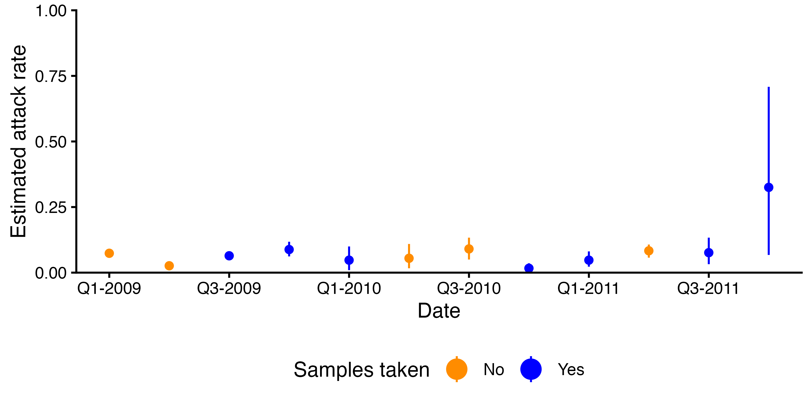
## Posterior estimates for infection timings.
plot_cumulative_infection_histories(
inf_chain = chains$inf_chain,
indivs = 1:9,
possible_exposure_times = possible_exposure_times
)[[2]] + x_axis + theme(axis.text.x = element_text(angle = 45, hjust = 1))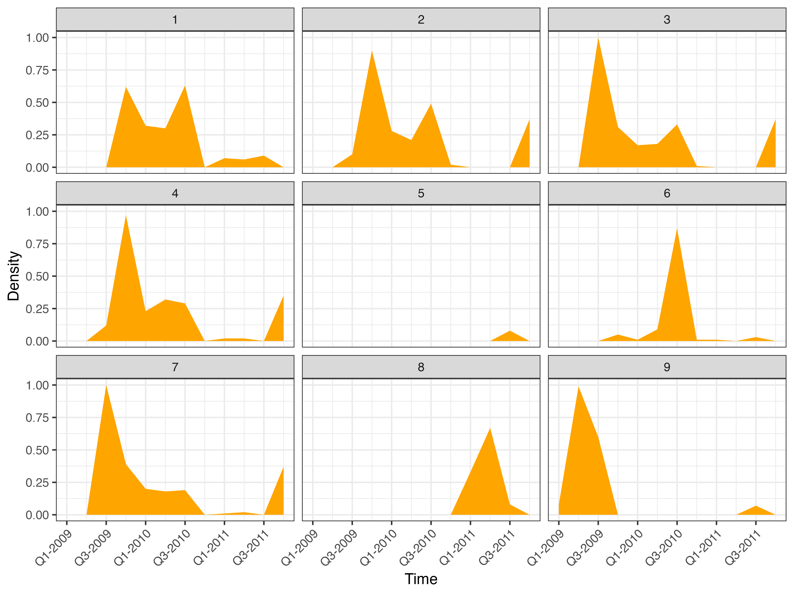
The main model estimates are the antibody kinetics, attack rates, and infection timings.
## Antibody kinetics model and estimated attack rates.
res$plot_antibody_model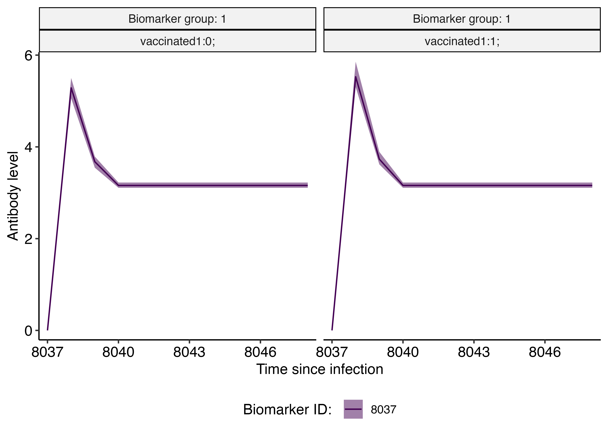
res$plot_attack_rates + coord_cartesian(ylim = c(0, 0.4)) + x_axis
#> Coordinate system already present.
#> ℹ Adding new coordinate system, which will replace the existing one.
#> Scale for x is already present.
#> Adding another scale for x, which will replace the existing scale.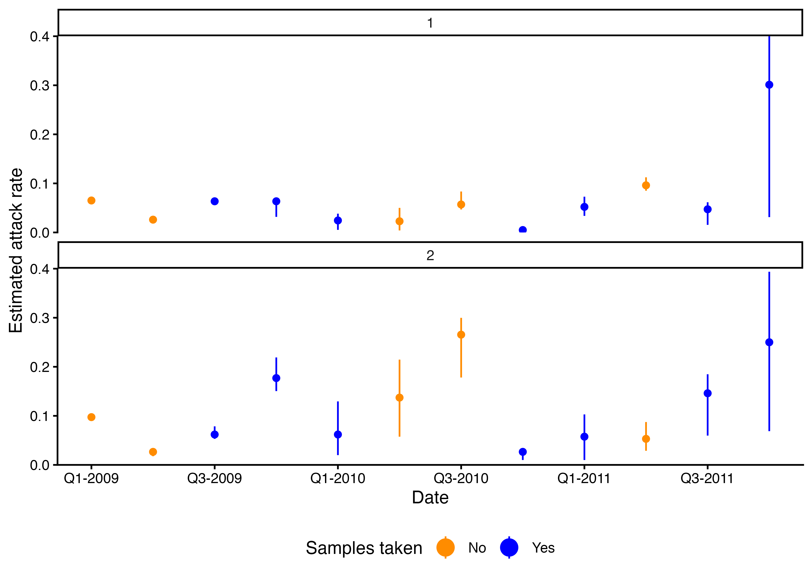
## Posterior estimates for infection timings.
plot_cumulative_infection_histories(
inf_chain = chains$inf_chain,
indivs = 1:25,
possible_exposure_times = possible_exposure_times
)[[2]] + x_axis + theme(axis.text.x = element_text(angle = 45, hjust = 1))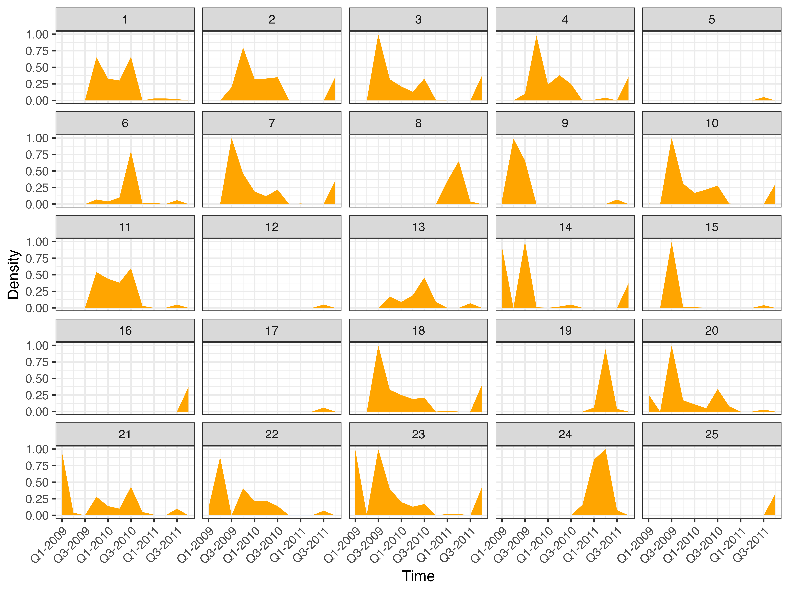
Simulation-recovery assesses whether the inference machinery can recover known parameter values. Data are simulated from the model using known values and then refitted to compare the estimates with those values.
The fitted parameter estimates provide a starting point for simulating a new data set.
## Extract the best parameter estimates from the real-data fit.
best_pars <- get_best_pars(chains$theta_chain)
best_pars <- best_pars[names(best_pars) != "total_infections"]
## Use these values for the simulated data set.
sim_par_tab <- par_tab
sim_par_tab$values <- best_pars[match(sim_par_tab$names, names(best_pars))]
## Fixed model options are not stored in the theta chain, so retain them.
sim_par_tab$values[sim_par_tab$names == "exponential_waning"] <-
par_tab$values[par_tab$names == "exponential_waning"]
## Simulate attack rates for the two vaccination groups.
sim_attack_rates <- simulate_attack_rates(
infection_years = possible_exposure_times,
mean_par = 0.05,
sd_par = 0.1,
n_groups = 2
)
## Simulate the serosurvey data.
simulated_data <- simulate_data(
par_tab = sim_par_tab,
n_indiv = length(unique(demographics$individual)),
possible_exposure_times = possible_exposure_times,
measured_biomarker_ids = unique(antibody_data$biomarker_id),
sampling_times = sort(unique(antibody_data$sample_time)),
nsamps = 4,
demographics = demographics,
attack_rates = sim_attack_rates,
data_type = "discrete"
)
## Plot the simulated serological data and include the true infection histories.
plot_antibody_data(
simulated_data$antibody_data,
possible_exposure_times = possible_exposure_times,
n_indivs = 16,
study_design = "longitudinal",
infection_histories = simulated_data$infection_histories
) + facet_wrap(~ individual, ncol = 4) + x_axis
#> Scale for x is already present.
#> Adding another scale for x, which will replace the existing scale.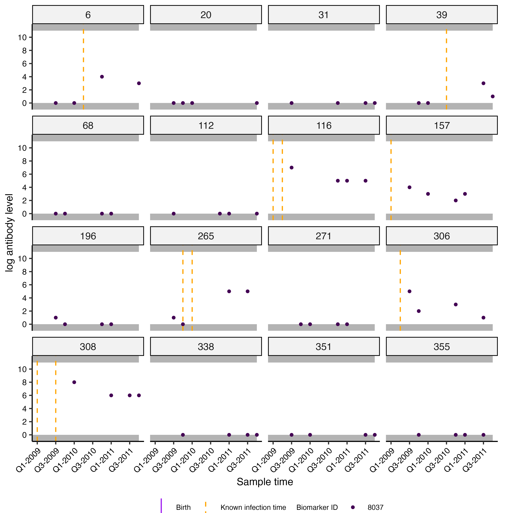
The simulated data are fitted using the same workflow, with shorter MCMC settings for this vignette.
The parameter estimates can be compared directly with the values used to simulate the data:
sim_res$all_diagnostics$theta_estimates %>%
filter(names != "total_infections") %>%
left_join(
simulated_data$par_tab %>% select(names, true = values),
by = "names"
) %>%
select(names, true, median, lower95_CrI, upper95_CrI) %>%
knitr::kable(digits = 3)| names | true | median | lower95_CrI | upper95_CrI |
|---|---|---|---|---|
| boost_long | 3.045 | 3.013 | 2.911 | 3.091 |
| boost_short | 2.255 | 2.112 | 1.859 | 2.373 |
| wane_short | 0.662 | 0.534 | 0.415 | 0.715 |
| obs_sd | 0.799 | 0.850 | 0.807 | 0.898 |
| boost_short_biomarker_1_coef_vaccinated1_1 | 0.123 | 0.157 | -0.091 | 0.389 |
The recovery is good when the estimated medians are close to the true parameter values and the 95% credible intervals generally include them.
The attack-rate estimates and model fits can be compared with their simulated values and infection histories:
plot_attack_rates(
sim_chains$inf_chain,
settings = sim_res$settings,
true_ar = simulated_data$attack_rates,
by_group = TRUE,
plot_den = FALSE
) + x_axis
#> Scale for x is already present.
#> Adding another scale for x, which will replace the existing scale.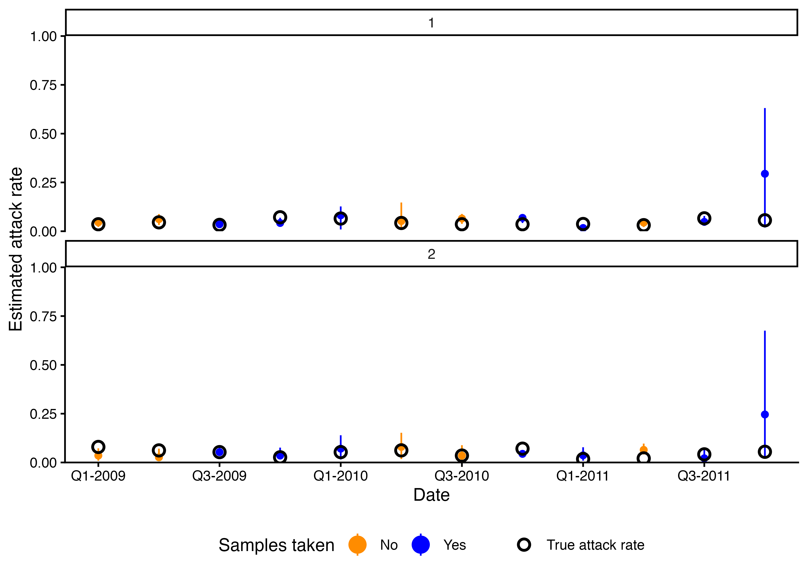
The estimated attack rates should be close to the true simulated values for both vaccination groups.
plot_model_fits(
sim_chains$theta_chain,
sim_chains$inf_chain,
known_infection_history = simulated_data$infection_histories,
individuals = 1:9,
orientation = "longitudinal",
settings = sim_res$settings,
p_ncol = 5
)[[1]] + x_axis + facet_wrap(~individual,ncol=3)
#> Scale for x is already present.
#> Adding another scale for x, which will replace the existing scale.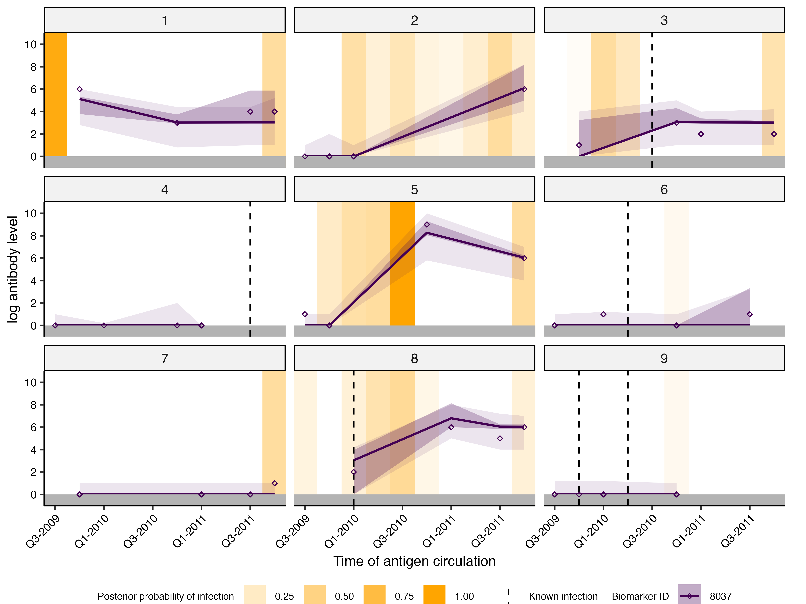
In the final plot, the dashed lines show the true infection times. These should generally pass through dark orange regions, which indicate a high posterior probability of infection.